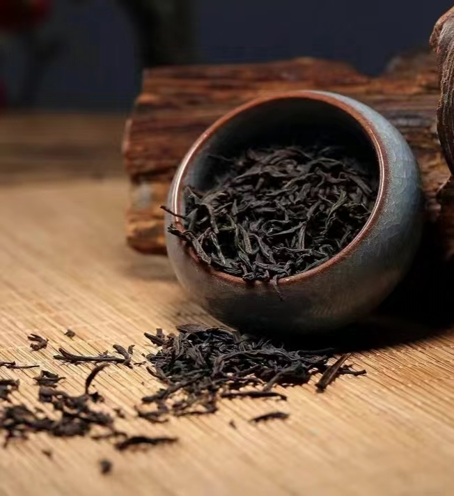
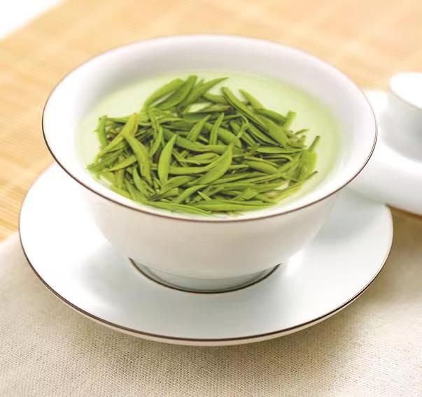

雨花茶
雨花茶是南京的特产，属于绿茶类，是中国经典名茶之一，被誉为“中国十大名茶”之一。 它以其独特的制作工艺和优良的品质特征而闻名。雨花茶的种植历史可以追溯到唐代，陆羽的《茶经》中就有记载。这种茶在清明前采摘，只选一芽一叶的芽叶，经过杀青、揉捻、整形干燥等工序，其中手工炒制是雨花茶制作的重要环节，每锅只能炒制250克茶。雨花茶的外形紧细圆直，形如松针，色泽翠绿，白毫显露，香气高雅，滋味鲜醇，汤色清澈，叶底嫩绿明亮。冲泡后，芽叶直立，上下沉浮，犹如翡翠，清香四溢，品饮一杯，沁人肺腑，齿颊留香
雨花茶不仅是一种高品质的茶叶，还承载着丰富的文化内涵。它是南京城市文化的一张名片，象征着革命先烈万古长青的精神。雨花茶的制作技艺是国家级非物质文化遗产，至今已拥有六代传承体系，完整保留了传统工艺。南京雨花茶的制作技艺包括采茶、摊放、杀青、揉捻、整形干燥、筛分等多个步骤，每个步骤都有严格的要求和标准，以确保茶叶的品质和口感。
此外，雨花茶的饮用和贮存也有其特定的方式。一般选用透明玻璃杯或盖碗进行冲泡，采用“上投法”，即先向杯中注入约七分满的开水，待水温凉至80℃左右时，再进行投茶。在储存方面，雨花茶忌潮湿、忌高温、忌氧气、忌异味，一般可采用塑料袋、铝箔袋贮存法、金属罐装贮存法以及低温贮存法来保持其品质。。
雨花茶的历史典故和制作技艺体现了南京深厚的茶文化和制茶智慧。作为南京的代表性茶叶，雨花茶不仅是一种高品质的饮品，更是南京乃至中国茶文化的重要组成部分。

1识：雨花茶外形挺俊，色泽幽绿，条索紧直，锋苗挺秀，带有白毫，干茶香气浓郁。
2泡：最宜使用直简玻璃杯冲泡，水温80-90°℃ 可以使用上投法，也可以使用中投法。第一泡冲泡时间1-2分钟。
3品：冲泡后，香气清雅，如清月照林意味深远。
茶汤绿透银光，毫毛丰盛。滋味醇和，回味持久。
茶

